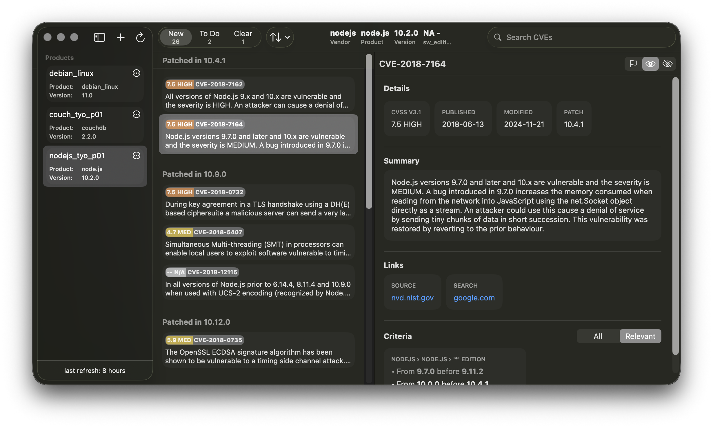

A macOS app for tracking CVEs from the National Vulnerability Database (NVD).
For security analysts, sys admins, and devs who need a clear view of vulnerabilities affecting the software they care about.
Save products using their CPE identifiers, monitor newly published CVEs, and quickly triage vulnerabilities.

PatchPal is built for manual tracking and analysis, avoiding system scanning and privileged access.
Lightweight and built natively with SwiftUI. Designed to be efficient and get out of the way.
Preview Available Soon (macOS 26)